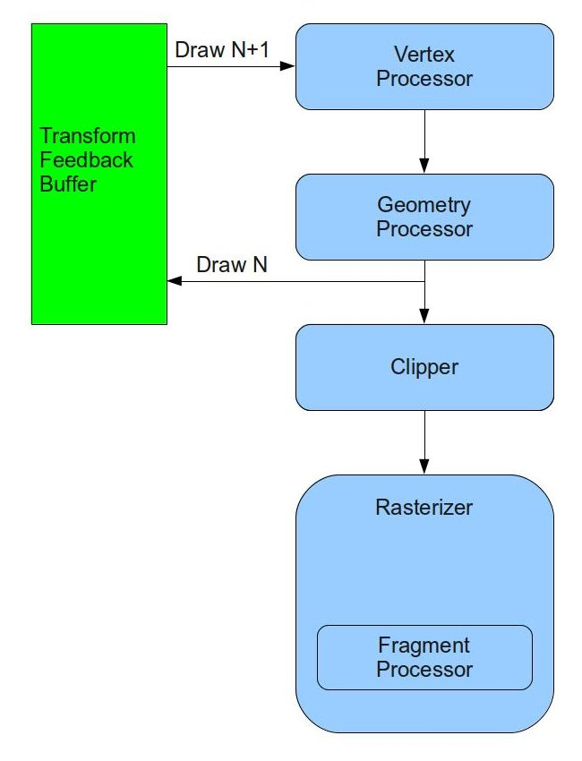

Background
Particle System is a general name of a large number of techniques that simulate natural phenomena such as smoke, dust, fireworks, rain, etc. The common theme in all these phenomena is that they are composed of a large amount of small particles that move together in a way which is characteristic of each type of phenomenon.
In order to simulate a natural phenomenon made from particles we usually maintain the position as well as other attributes for each particle (velocity, color, etc) and perform the following steps once per frame:
- Update the attributes of each particle. This step usually involves some math calculations (ranging from very simple to very complex - depending on the complexity of the phenomenon).
- Render the particles (as simple colored points or full blown texture mapped billboard quads).
In the past step 1 usually took place on the CPU. The application would access the vertex buffer, scan its contents and update the attributes of each and every particle. Step 2 was more straightforward and took place on the GPU as any other type of rendering. There are two problems with this approach:
- Updating the particles on the CPU requires the OpenGL driver to copy the contents of the vertex buffer from the GPU memory (on discrete cards this means over the PCI bus) to the CPU memory. The phenomena that we are insterested in usually require a large amount of particles. 10,000 particles is not a rare number in that regard. If each particle takes up 64 bytes and we are running at 60 frames per second (very good frame rate) this means copying back and forth 640K from the GPU to the CPU 60 times each second. This can have an negative effect on the performance of the application. As the number of particles grows larger the effect increases.
- Updating the particle attributes means running the same mathematical formula on different data items. This is a perfect example of distributed computing that the GPU excels at. Running it on the CPU means serializing the entire update process. If our CPU is multi core we can take advantage of it and reduce the total amount of time but that requires more work from the application. Running the update process on the GPU means that we get parallel execution for free.
DirectX10 introduced a new feature known as Stream Output that is very useful for implementing particle systems. OpenGL followed in version 3.0 with the same feature and named it Transform Feedback. The idea behind this feature is that we can connect a special type of buffer (called Transform Feedback Buffer right after the GS (or the VS if the GS is absent) and send our transformed primitives to it. In addition, we can decide whether the primitives will also continue on their regular route to the rasterizer. The same buffer can be connected as a vertex buffer in the next draw and provide the vertices that were output in the previous draw as input into the next draw. This loop enables the two steps above to take place entirely on the GPU with no application involvement (other than connecting the proper buffers for each draw and setting up some state). The following diagram shows the new architecture of the pipeline:
How many primitives end up in the transform feedback buffer? well, if there is no GS the answer is simple - it is based on the number of vertices from the draw call parameters. However, if the GS is present the number of primitives is unknown. Since the GS is capable of creating and destroying primitives on the fly (and can also include loops and branches) we cannot always calculate the total number of primitives that will end up in the buffer. So how can we draw from it later when we don't know exactly the number of vertices it contains? To overcome this challenge transform feedback also introduced a new type of draw call that does not take the number of vertices as a parameter. The system automatically tracks the number of vertices for us for each buffer and later uses that number internally when the buffer is used for input. If we append several times to the transform feedback buffer (by drawing into it several times without using it as input) the number of vertices is increased accordingly. We have the option of reseting the offset inside the buffer whenever we want and the system will also reset the number of vertices.
In this tutorial we will use transform feedback in order to simulate the effect of fireworks. Fireworks are relatively easy to simulate in terms of the math involved so we will be able to focus on getting transform feedback up and running. The same framework can later be used for other types of particle systems as well.
OpenGL enforces a general limitation that the same resource cannot be bound for both input and output in the same draw call. This means that if we want to update the particles in a vertex buffer we actually need two transform feedback buffers and toggle between them. On frame 0 we will update the particles in buffer A and render the particles from buffer B and on frame 1 we will update the particles in buffer B and render the particles from buffer A. All this is transparent to the viewer.
In addition, we will also have two techniques - one technique will be responsible for updating the particles and the other for rendering. We will use the billboarding technique from the previous tutorial for rendering so make sure you are familiar with it.
Source walkthru
(particle_system.h:29)
class ParticleSystem
{
public:
ParticleSystem();
~ParticleSystem();
bool InitParticleSystem(const Vector3f& Pos);
void Render(int DeltaTimeMillis, const Matrix4f& VP, const Vector3f& CameraPos);
private:
bool m_isFirst;
unsigned int m_currVB;
unsigned int m_currTFB;
GLuint m_particleBuffer[2];
GLuint m_transformFeedback[2];
PSUpdateTechnique m_updateTechnique;
BillboardTechnique m_billboardTechnique;
RandomTexture m_randomTexture;
Texture* m_pTexture;
int m_time;
};
The ParticleSystem class encapsulates all the mechanics involved in managing the transform feedback buffer. One instance of this class is created by the application and initialized with the world space position of the fireworks launcher. In the main render loop the ParticleSystem::Render() function is called and takes three parameters: the delta time from the previous call in milliseconds, the product of the viewport and projection matrices and the world space position of the camera. The class also has a few attributes: an indicator for the first time Render() is called, two indices that specify which buffer is currently the vertex buffer (input) and which is the transform feedback buffer (output), two handles for the vertex buffers, two handles for the transform feedback objects, the update and render techniques, a texture that contains random numbers, the texture that will be mapped on the particles and the current global time variable.
(particle_system.cpp:31)
struct Particle
{
float Type;
Vector3f Pos;
Vector3f Vel;
float LifetimeMillis;
};
Each particle has the above structure. A particle can be either a launcher, a shell or a secondary shell. The launcher is static and is responsible for generating the other particles. It is unique in the system. The launcher periodically creates shell particles and fires them upwards. After a few seconds the shells explode into secondary shells that fly into random directions. All particles except the launcher has a lifetime which is tracked by the system in milliseconds. When the lifetime reaches a certain threshold the particle is removed. Each particle also has a current position and velocity. When a particle is created it is given some velocity (a vector). This velocity is influenced by gravity which pulls the particle down. On every frame we use the velocity to update the world position of the particle. This position is used later to render the particle.
(particle_system.cpp:67)
bool ParticleSystem::InitParticleSystem(const Vector3f& Pos)
{
Particle Particles[MAX_PARTICLES];
ZERO_MEM(Particles);
Particles[0].Type = PARTICLE_TYPE_LAUNCHER;
Particles[0].Pos = Pos;
Particles[0].Vel = Vector3f(0.0f, 0.0001f, 0.0f);
Particles[0].LifetimeMillis = 0.0f;
glGenTransformFeedbacks(2, m_transformFeedback);
glGenBuffers(2, m_particleBuffer);
for (unsigned int i = 0; i < 2 ; i++) {
glBindTransformFeedback(GL_TRANSFORM_FEEDBACK, m_transformFeedback[i]);
glBindBuffer(GL_ARRAY_BUFFER, m_particleBuffer[i]);
glBufferData(GL_ARRAY_BUFFER, sizeof(Particles), Particles, GL_DYNAMIC_DRAW);
glBindBufferBase(GL_TRANSFORM_FEEDBACK_BUFFER, 0, m_particleBuffer[i]);
}
This is the first part of the initialization of the particle system. We set up storage for all the particles on the stack and initialize just the first particle as a launcher (the remaining particles will be created at render time). The position of the launcher is also the starting position of all the particles it is going to create and the velocity of the launcher is their starting velocity (the launcher itself is static). We are going to use two transform feedback buffers and toggle between them (drawing into one while using the other as input and vice verse) so we create two transform feedback objects using the function glGenTransformFeedbacks. The transform feedback object encapsulates all the state that is attached to the transform feedback object. We also create two buffer objects - one for each transform feedback object. We then perform the same series of operations for both objects (see below).
We start by binding a transform feedback object to the GL_TRANSFORM_FEEDBACK target using glBindTransformFeedback() function. This makes the object "current" so that following operations (relevant to transform feedback) are performed on it. Next we bind the the corresponding buffer object to the GL_ARRAY_BUFFER which makes it a regular vertex buffer and load the contents of the particle array into it. Finally we bind the corresponding buffer object to the GL_TRANSFORM_FEEDBACK_BUFFER target and specify the buffer index as zero. This makes this buffer a transform feedback buffer and places it as index zero. We can have the primitives redirected into more than one buffer by binding several buffers at different indices. Here we only need one buffer. So now we have two transform feedback objects with corresponding buffer objects that can serve both as vertex buffers as well as transform feedback buffers.
We won't review the remainder of the InitParticleSystem() function because there is nothing new there. We simply need to initialize the two techniques (members of the ParticleSystem class) and set some static state into them as well as load the texture that will be mapped on the particles. Check the code for more details.
(particle_system.cpp:124)
void ParticleSystem::Render(int DeltaTimeMillis, const Matrix4f& VP, const Vector3f& CameraPos)
{
m_time += DeltaTimeMillis;
UpdateParticles(DeltaTimeMillis);
RenderParticles(VP, CameraPos);
m_currVB = m_currTFB;
m_currTFB = (m_currTFB + 1) & 0x1;
}
This is the main render function of the ParticleSystem class. It is responsible for updating the global time counter and toggling between the two buffer indices ('m_currVB' is the current vertex buffer and is initialized to 0 while 'm_currTFB' is the current transform feedback buffer and is initialized to 1). The main job of this function is to call the two private functions that update the particle attributes and then render them. Let's take a look at how we update the particles.
(particle_system.cpp:137)
void ParticleSystem::UpdateParticles(int DeltaTimeMillis)
{
m_updateTechnique.Enable();
m_updateTechnique.SetTime(m_time);
m_updateTechnique.SetDeltaTimeMillis(DeltaTimeMillis);
m_randomTexture.Bind(RANDOM_TEXTURE_UNIT);
We start the particle update by enabling the corresponding technique and setting some dynamic state into it. The technique will need to know the amount of time that has passed from the previous render because this is the factor in the movement equation and it needs the global time as a semi random seed for accessing the random texture. We dedicate GL_TEXTURE3 as the texture unit for binding random textures. The random texture is used to provide directions for the generated particles (we will later see how this texture is created).
glEnable(GL_RASTERIZER_DISCARD);
The next function call is something that we haven't seen before. Since the only purpose of the draw call further down this function is to update the transform feedback buffer we prefer to cut the flow of primitives after that and prevent them from also being rasterized to the screen. We have another draw call later on that does that. Calling glEnable() with the GL_RASTERIZER_DISCARD flag tells the pipeline to discard all primitives before they reach the rasterizer (but after the optional transform feedback stage).
glBindBuffer(GL_ARRAY_BUFFER, m_particleBuffer[m_currVB]);
glBindTransformFeedback(GL_TRANSFORM_FEEDBACK, m_transformFeedback[m_currTFB]);
The next two calls handle the toggling between the roles of the two buffers that we have created. 'm_currVB' is used as an index (either 0 or 1) into the array of VBs and we bind the buffer in that slot as a vertex buffer (for input). 'm_currTFB' is used as an index (always opposing 'm_currVB') into the transform feedback object array and we bind the object in that slot as transform feedback (which brings along with it the attached state - the actual buffer).
glEnableVertexAttribArray(0);
glEnableVertexAttribArray(1);
glEnableVertexAttribArray(2);
glEnableVertexAttribArray(3);
glVertexAttribPointer(0,1,GL_FLOAT,GL_FALSE,sizeof(Particle),0); // type
glVertexAttribPointer(1,3,GL_FLOAT,GL_FALSE,sizeof(Particle),(const GLvoid*)4); // position
glVertexAttribPointer(2,3,GL_FLOAT,GL_FALSE,sizeof(Particle),(const GLvoid*)16); // velocity
glVertexAttribPointer(3,1,GL_FLOAT,GL_FALSE,sizeof(Particle),(const GLvoid*)28); // lifetime
We already know the next few function calls. They simply set up the vertex attributes of the particles in the vertex buffer. You will later see how we make sure that the input layout is the same as the output layout.
glBeginTransformFeedback(GL_POINTS);
The real fun starts here. glBeginTransformFeedback() makes transform feedback active. All the draw calls after that, and until glEndTransformFeedback() is called, redirect their output to the transform feedback buffer according to the currently bound transform feedback object. This function also takes a topology parameter. The way transform feedback works is that only complete primitives (i.e. lists) can be written into the buffer. This means that if you draw four vertices in triangle strip topology or six vertices in triangle list topology, you end up with six vertices (two triangles) in the feedback buffer in both cases. The available topologies to this function are therefore:
- GL_POINTS - the draw call topology must also be GL_POINTS.
- GL_LINES - the draw call topology must be GL_LINES, GL_LINE_LOOP or GL_LINE_STRIP.
- GL_TRIANGLES - the draw call topology must be GL_TRIANGLES, GL_TRIANGLE_STRIP or GL_TRIANGLE_FAN.
if (m_isFirst) {
glDrawArrays(GL_POINTS, 0, 1);
m_isFirst = false;
}
else {
glDrawTransformFeedback(GL_POINTS, m_transformFeedback[m_currVB]);
}
As described earlier, we have no way of knowing how many particles end up in the buffer and transform feedback supports this. Since we generate and destroy particles based on the launcher frequency and each particle lifetime, we cannot tell the draw call how many particles to process. This is all true - except for the very first draw. In this case we know that our vertex buffer contains only the launcher and the "system" doesn't have any record of previous transform feedback activity so it cannot tell the number of particles on its own. This is why the first draw must be handled explicitly using a standard glDrawArrays() function of a single point. The remaining draw calls will be done using glDrawTransformFeedback(). This function doesn't need to be told how many vertices to process. It simply checks the input buffer and draws all the vertices that have been previously written into it (when it was bound as a transform feedback buffer). Note that whenever we bind a transform feedback object the number of vertices in the buffer becomes zero because we called glBindBufferBase() on that buffer while the transform feedback object was originally bound (see the initialization part) with the parameter zero as the offset. OpenGL remembers that so we don't need to call glBindBufferBase() again. It simply happens behind the scenes when the transform feedback object is bound.
glDrawTransformFeedback() takes two parameters. The first one is the topology. The second one is the transform feedback object to which the current vertex buffer is attached. Remember that the currently bound transform feedback object is m_transformFeedback[m_currTFB]. This is the target of the draw call. The number of vertices to process as input comes from the transform feedback object which was bound as a target in the previous time we went through ParticleSystem::UpdateParticles(). If this is confusing, simply remember that when we draw into transform feedback object #1 we want to take the number of vertices to draw from transform feedback #0 and vice versa. Today's input is tomorrow's output.
glEndTransformFeedback();
Every call to glBeginTransformFeedback() must be paired with glEndTransformFeedback(). If you miss that things will break pretty quick.
glDisableVertexAttribArray(0);
glDisableVertexAttribArray(1);
glDisableVertexAttribArray(2);
glDisableVertexAttribArray(3);
}
The end of the function is standard. When we get to this point all the particles have been updated. Let's see how to render them in their new positions.
(particle_system.cpp:177)
void ParticleSystem::RenderParticles(const Matrix4f& VP, const Vector3f& CameraPos)
{
m_billboardTechnique.Enable();
m_billboardTechnique.SetCameraPosition(CameraPos);
m_billboardTechnique.SetVP(VP);
m_pTexture->Bind(COLOR_TEXTURE_UNIT);
We start the actual rendering by enabling the billboarding technique and setting some state into it. Each particle will be extended into a quad and the texture that we bind here will be mapped on its face.
glDisable(GL_RASTERIZER_DISCARD);
Rasterization was disabled while we were writing into the feedback buffer. We enable it by disabling the GL_RASTERIZER_DISCARD feature.
glBindBuffer(GL_ARRAY_BUFFER, m_particleBuffer[m_currTFB]);
When we wrote into the transform feedback buffer we bound m_transformFeedback[m_currTFB] as the transform feedback object (the target). That object has m_particleBuffer[m_currTFB] as the attached vertex buffer. We now bind this buffer to provide the input vertices for rendering.
glEnableVertexAttribArray(0);
glVertexAttribPointer(0, 3, GL_FLOAT, GL_FALSE, sizeof(Particle), (const GLvoid*)4); // position
glDrawTransformFeedback(GL_POINTS, m_transformFeedback[m_currTFB]);
glDisableVertexAttribArray(0);
}
The particle in the transform feedback buffer has four attributes. In order to render it we only need position so only a single attribute is enabled. Make sure that the stride (distance between that attribute in two consecutive vertices) is set to sizeof(Particle) to accomodate the three attributes that we ignore. Failing to do so will result in a corrupted image.
In order to draw we use glDrawTransformFeedback() again. The second parameter is the transform feedback object that matches the input vertex buffer. This object "knows" how many vertices to draw.
(ps_update_technique.cpp:151)
bool PSUpdateTechnique::Init()
{
if (!Technique::Init()) {
return false;
}
if (!AddShader(GL_VERTEX_SHADER, pVS)) {
return false;
}
if (!AddShader(GL_GEOMETRY_SHADER, pGS)) {
return false;
}
const GLchar* Varyings[4];
Varyings[0] = "Type1";
Varyings[1] = "Position1";
Varyings[2] = "Velocity1";
Varyings[3] = "Age1";
glTransformFeedbackVaryings(m_shaderProg, 4, Varyings, GL_INTERLEAVED_ATTRIBS);
if (!Finalize()) {
return false;
}
m_deltaTimeMillisLocation = GetUniformLocation("gDeltaTimeMillis");
m_randomTextureLocation = GetUniformLocation("gRandomTexture");
m_timeLocation = GetUniformLocation("gTime");
m_launcherLifetimeLocation = GetUniformLocation("gLauncherLifetime");
m_shellLifetimeLocation = GetUniformLocation("gShellLifetime");
m_secondaryShellLifetimeLocation = GetUniformLocation("gSecondaryShellLifetime");
if (m_deltaTimeMillisLocation == INVALID_UNIFORM_LOCATION ||
m_timeLocation == INVALID_UNIFORM_LOCATION ||
m_randomTextureLocation == INVALID_UNIFORM_LOCATION) {
m_launcherLifetimeLocation == INVALID_UNIFORM_LOCATION ||
m_shellLifetimeLocation == INVALID_UNIFORM_LOCATION ||
m_secondaryShellLifetimeLocation == INVALID_UNIFORM_LOCATION) {
return false;
}
return true;
}
You now understand the mechanics of creating a transform feedback object, attaching a buffer to it and rendering into it. But there is still the question of what exactly goes into the feedback buffer? Is it the entire vertex? Can we specify only a subset of the attributes and what is the order between them? The answer to these questions lies in the code in boldface above. This function initializes the PSUpdateTechnique which handles the update of the particles. We use it within the scope of glBeginTransformFeedback() and glEndTransformFeedback(). To specify the attributes that go into the buffer we have to call glTransformFeedbackVaryings() before the technique program is linked. This function takes four parameters: the program handle, an array of strings with the name of the attributes, the number of strings in the array and either GL_INTERLEAVED_ATTRIBS or GL_SEPARATE_ATTRIBS. The strings in the array must contain names of output attributes from the last shader before the FS (either VS or GS). When transform feedback is active these attributes will be written into the buffer per vertex. The order will match the order inside the array. The last parameter to glTransformFeedbackVaryings() tells OpenGL either to write all the attributes as a single structure into a single buffer (GL_INTERLEAVED_ATTRIBS). Or to dedicate a single buffer for each attribute (GL_SEPARATE_ATTRIBS). If you use GL_INTERLEAVED_ATTRIBS you can only have a single transform feedback buffer bound (as we do). If you use GL_SEPARATE_ATTRIBS you will need to bind a different buffer to each slot (according to the number of attributes). Remember that the slot is specified as the second parameter to glBindBufferBase(). In addition, you are limited to no more than GL_MAX_TRANSFORM_FEEDBACK_SEPARATE_ATTRIBS attribute slots (which is usually 4).
Other than glTransformFeedbackVaryings() the initialization stuff is pretty standard. But note that the FS is missing from it. If we disable rasterization when we update the particles we don't need a FS...
(ps_update.vs)
#version 330
layout (location = 0) in float Type;
layout (location = 1) in vec3 Position;
layout (location = 2) in vec3 Velocity;
layout (location = 3) in float Age;
out float Type0;
out vec3 Position0;
out vec3 Velocity0;
out float Age0;
void main()
{
Type0 = Type;
Position0 = Position;
Velocity0 = Velocity;
Age0 = Age;
}
This is the VS of the particle update technique and as you can see - it is very simple. All it does is pass through the vertices to the GS (where the real action takes place).
(ps_update.gs)
#version 330
layout(points) in;
layout(points) out;
layout(max_vertices = 30) out;
in float Type0[];
in vec3 Position0[];
in vec3 Velocity0[];
in float Age0[];
out float Type1;
out vec3 Position1;
out vec3 Velocity1;
out float Age1;
uniform float gDeltaTimeMillis;
uniform float gTime;
uniform sampler1D gRandomTexture;
uniform float gLauncherLifetime;
uniform float gShellLifetime;
uniform float gSecondaryShellLifetime;
#define PARTICLE_TYPE_LAUNCHER 0.0f
#define PARTICLE_TYPE_SHELL 1.0f
#define PARTICLE_TYPE_SECONDARY_SHELL 2.0f
That's the start of the GS in the particle update technique with all the declarations and definitions that we will need. We are going to get points as input and provide points as output. All the attributes we will get from the VS will also end up in the transform feedback buffer (after having gone through some processing). There are a few uniform variables that we depend on and we also enable the application to configure the frequency of the launcher and the lifetime of the shell and the secondary shell (the launcher generates one shell according to its frequency and the shell explodes to secondary shells after its configured lifetime is expired).
vec3 GetRandomDir(float TexCoord)
{
vec3 Dir = texture(gRandomTexture, TexCoord).xyz;
Dir -= vec3(0.5, 0.5, 0.5);
return Dir;
}
This is a utility function that we will use to generate a random direction for the shells. The directions are stored in a 1D texture whose elements are 3D vectors (floating point). We will later see how we populate the texture with random vectors. This function simply takes a floating point value and uses it to sample from the texture. Since all the values in the texture are in the [0.0-1.0] range we substract the vector (0.5,0.5,0.5) from the sampled result in order to move the values into the [-0.5 - 0.5] range. This allows the particles to fly in all directions.
void main()
{
float Age = Age0[0] + gDeltaTimeMillis;
if (Type0[0] == PARTICLE_TYPE_LAUNCHER) {
if (Age >= gLauncherLifetime) {
Type1 = PARTICLE_TYPE_SHELL;
Position1 = Position0[0];
vec3 Dir = GetRandomDir(gTime/1000.0);
Dir.y = max(Dir.y, 0.5);
Velocity1 = normalize(Dir) / 20.0;
Age1 = 0.0;
EmitVertex();
EndPrimitive();
Age = 0.0;
}
Type1 = PARTICLE_TYPE_LAUNCHER;
Position1 = Position0[0];
Velocity1 = Velocity0[0];
Age1 = Age;
EmitVertex();
EndPrimitive();
}
The main function of the GS contains the processing of the particles. We start by updating the age of the particle at hand and then we branch according to its type. The code above handles the case of the launcher particle. If the launcher's lifetime has expired we generate a shell particle and emit it into the transform feedback buffer. The shell gets the position of the launcher as a starting point and a random direction from the random texture. We use the global time as a pseudo random seed (not really random but the results are good enough). We make sure the minimum Y value of the direction is 0.5 so that the shell is emitted in the general direction of the sky. The direction vector is then normalized and divided by 20 to provide the velocity vector (you may need to tune that for your system). The age of the new particle is ofcourse zero and we also reset the age of the launcher to get that process started again. In addition, we always output the launcher itself back into the buffer (else no more particles will be created).
else {
float DeltaTimeSecs = gDeltaTimeMillis / 1000.0f;
float t1 = Age0[0] / 1000.0;
float t2 = Age / 1000.0;
vec3 DeltaP = DeltaTimeSecs * Velocity0[0];
vec3 DeltaV = vec3(DeltaTimeSecs) * (0.0, -9.81, 0.0);
Before we start handling the shell and the secondary shell we setup a few variables that are common to both. The delta time is translated from milliseconds to seconds. We translate the old age of the particle (t1) and the new age (t2) to seconds as well. The change in the position is calculated according to the equation 'position = time * velocity'. Finally we calculate the change in velocity by multiplying the delta time by the gravity vector. The particle gains a velocity vector when it is born, but after that the only force that affects it (ignoring wind, etc) is gravity. The speed of a falling object on earth increases by 9.81 meters per second for every second. Since the direction is downwards we get a negative Y component and zero on the X and Z. We use a bit of a simplified calculation here but it serves its purpose.
if (Type0[0] == PARTICLE_TYPE_SHELL) {
if (Age < gShellLifetime) {
Type1 = PARTICLE_TYPE_SHELL;
Position1 = Position0[0] + DeltaP;
Velocity1 = Velocity0[0] + DeltaV;
Age1 = Age;
EmitVertex();
EndPrimitive();
}
else {
for (int i = 0 ; i < 10 ; i++) {
Type1 = PARTICLE_TYPE_SECONDARY_SHELL;
Position1 = Position0[0];
vec3 Dir = GetRandomDir((gTime + i)/1000.0);
Velocity1 = normalize(Dir) / 20.0;
Age1 = 0.0f;
EmitVertex();
EndPrimitive();
}
}
}
We now take care of the shell. As long as the age of this particle hasn't reached its configured lifetime it remains in the system and we only update its position and velocity based on the deltas we calculated earlier. Once it reaches the end of its life it is destroyed and instead we generate 10 secondary particles and emit them into the buffer. They all gain the position of their parent shell but each gets its own random velocity vector. In the case of the secondary shell we don't limit the direction so the explosion looks real.
else {
if (Age < gSecondaryShellLifetime) {
Type1 = PARTICLE_TYPE_SECONDARY_SHELL;
Position1 = Position0[0] + DeltaP;
Velocity1 = Velocity0[0] + DeltaV;
Age1 = Age;
EmitVertex();
EndPrimitive();
}
}
}
}
Handling of the secondary shell is similar to the shell, except that when it reaches the end of its life it simply dies and no new particle is generated.
(random_texture.cpp:37)
bool RandomTexture::InitRandomTexture(unsigned int Size)
{
Vector3f* pRandomData = new Vector3f[Size];
for (unsigned int i = 0 ; i < Size ; i++) {
pRandomData[i].x = RandomFloat();
pRandomData[i].y = RandomFloat();
pRandomData[i].z = RandomFloat();
}
glGenTextures(1, &m_textureObj);
glBindTexture(GL_TEXTURE_1D, m_textureObj);
glTexImage1D(GL_TEXTURE_1D, 0, GL_RGB, Size, 0.0f, GL_RGB, GL_FLOAT, pRandomData);
glTexParameterf(GL_TEXTURE_1D, GL_TEXTURE_MIN_FILTER, GL_LINEAR);
glTexParameterf(GL_TEXTURE_1D, GL_TEXTURE_MAG_FILTER, GL_LINEAR);
glTexParameterf(GL_TEXTURE_1D, GL_TEXTURE_WRAP_S, GL_REPEAT);
delete [] pRandomData;
return GLCheckError();
}
The RandomTexture class is a useful tool that can provide random data from within the shaders. It is a 1D texture with the GL_RGB internal format and floating point data type. This means that every element is a vector of 3 floating point values. Note that we set the wrap mode to GL_REPEAT. This allows us to use any texture coordinate to access the texture. If the texture coordinate is more than 1.0 it is simply wrapped around so it always retrieves a valid value. In this series of tutorials the texture unit 3 will be dedicated for random textures. You can see the setup of the texture units in the header file engine_common.h.